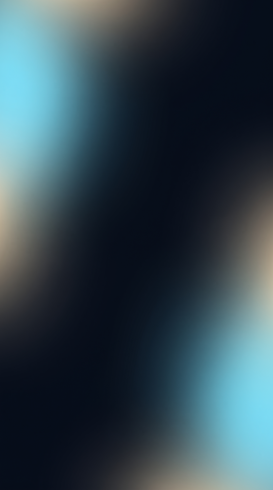
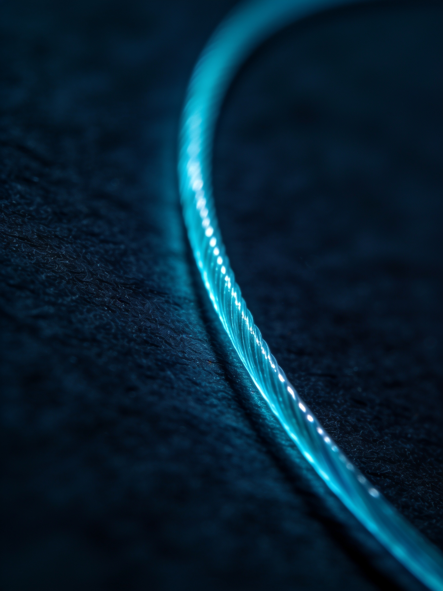

IMCP · Microchirurgie
Fils de suture & aiguilles :
les bons critères
les bons critères
Aujourd'hui, je voudrais vous parler des fils de suture et des aiguilles.
Sur quels critères choisissez-vous vos fils de suture et vos aiguilles ?
Il faut être efficace, aller vite pour réduire les suites opératoires.
Il y a donc des critères de choix des fils de suture.
Premièrement, le fil : on parle de fil monofilament.
Concernant les aiguilles, on préfère des aiguilles très précises, avec des angles aigus :
Si vous voulez en savoir plus, je développe tous ces concepts dans mon enseignement
que je propose online, sur des vidéos beaucoup plus longues où l'on pourra discuter de tout cela.
Je vous engage à suivre tout ça sur mon site.
À très vite.
En microchirurgie
Respecter les tissus
Préserver la vascularisation
Éviter les tensions
Le premier critère : la structure du fil
Oui — monofilament

Surface lisse
Aucune rétention
Passage atraumatique
Non — tressé
Retient les bactéries
Inflammation post-op
Effet scie
Les aiguilles
Angles aigus
Taper cut
Geste précis et rapide
Formations microchirurgie
IMCP
Dr Fabrice Baudot
Microchirurgie · Laser Er-YAG